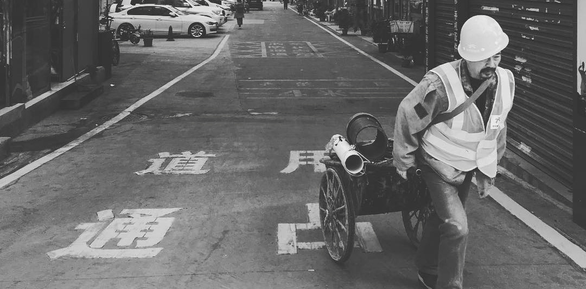

事件与偶然相遇：为什么我们害怕爱情

著名的美国知识分子视频网站Big Think在11月30日又邀请到一位老朋友：学术战斗机话题男神齐泽克先生！这次他受邀做了一个6分钟的谈话，来讲解他今年的新书《事件：概念的哲学之旅》（Event: A Philosophical Journey Through A Concept）中的主题——事件与偶然相遇（events and encounters）。在谈话中，齐泽克告诉我们，为何可以通过研究一个事件的本质，追溯引起这个事件的各种原因，彻底剖析现象可以揭示出整个社会的真相。
齐泽克在谈话中讲了两大主题。首先，他给出了一个关于「事件」的基本理论性的定义，并用一些抽象的例子来解释他的观点。然后，他用这个观点来解释现代人对于陷入爱情的态度是怎样的。
给出「事件」的确切定义是困难的，因为这个概念被如此多的要素关联着。齐泽克选择了一个基本的解释：
在我的书中所聚焦的「事件」，是指发生了某种特别的、超越常规（extraordinary）的事情。在特定领域中，事情的现象总是按照某种常规的流动持续进行，但有时候也会改变其原有的常规规则，「事件」就是这样产生的。
太晦涩！所以齐泽克这里仍然用他书中所使用的卡夫卡的例子来说明：
我们可以说，卡夫卡或隐或现地是受到了一串作家的影响，比如爱伦·坡、陀思妥耶夫斯基、威廉·布莱克等等。但是事情并非这么简单。因为，如果我们返回去一个一个单独地去考察这些人，考察他们的作品具有怎样的特点，这些使得使他们成为卡夫卡的先驱。我们会发现一个问题，这种考察的维度是说在卡夫卡出现以前，已经存在一个富有洞察力的、只能出现一次的卡夫卡。
在这个例子中，卡夫卡就是一个「事件」。直到卡夫卡出现，才能把那些作家的对卡夫卡的影响成为对卡夫卡的影响。
阿根廷作家博尔赫斯对此有一个十分简洁的表述。所有的作家都有前辈和先行者，但是，真正伟大的作家却在某种程度上创造了他的过去，创造了他自己的先行者们。所以，伟大的作家确实是被人影响的，但是只有当他已经出现的时候，我们才能看到这种影响。
在这里我们进入一些非常理论化的表述。这和「薛定谔的猫」的概念非常相似，箱子的盖打开后，我们才能确定猫是是否可以活着。齐泽克要告诉我们的是，只能是卡夫卡的出现才能决定埃德加·爱伦·坡可以成为造就卡夫卡的最后一步。旧金山巨人队赢得世界杯后，才能说他们进入季后赛是赢得世界杯的关键一步。
那么「事件」和爱情到底有什么关系？齐泽克转会表述方式，解释了爱情是一个偶然相遇，这就是为什么在英语，包括其他语言中，会说「fall」in love。一个普通人在生命中与真爱的偶然相遇只有一次。
一个完全偶然的偶然相遇，但却改变了一生。就像他们说那样，没有什么东西是相同的。你甚至会认为你整个的过去生活都是为导向这个特殊的时刻。的确，关于爱情的幻想就是「哦，上帝，我的一生都在等待你的出现」。
所谓一见钟情。在奉行父母之命媒妁之言的年代里，没有作为「事件」的爱情，无法有如上感受。因为两个人在谈论爱情之前，第三个人作为原因，已经让两人产生了可以预期的关联。让齐泽克感到悲哀的是，在互联网时代，作为「偶然相遇」的爱情，也变成了稀有物。此时，代替父母位置的，是机器的计算法则，根据条件进行匹配，先行的关联已经存在。婚恋网站、社交媒体绝对无法促成浪漫的爱情的「偶然相遇」。他们能提供的是没有「fall」的love。
最后，齐泽克说，现代人害怕「事件」，他们不仅害怕「偶然相遇」的爱情，他们害怕任何「偶然相遇」，这就是现代人肤浅的消费主义态度。
- Title: Slavoj Žižek: Events and Encounters Explain Our Fear of Falling in Love
- Link: http://bigthink.com/think-tank/slavoj-zizek-on-on-events-encounters-and-falling-in-love
- 翻译： 澎湃新闻译文，王小嗨改定